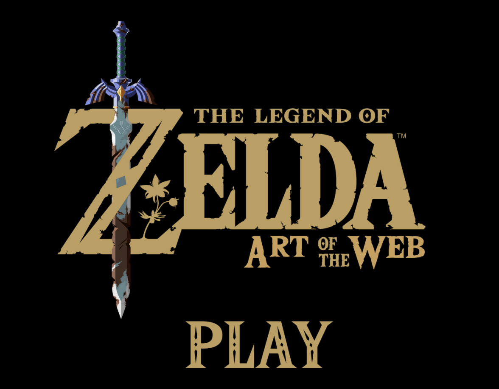

Section 3 Project 1
This project required us to work individually or in small groups to design and create a program or script for a performance.All projects, regardless of the approach, needed to incorporate principles of scripted "functions" and include an element of "chance."

I continue to draw inspiration from Nintendo games. I simplified the gameplay of The Legend of Zelda: Breath of the Wild and transformed it into a text-based game. At every branching point in the story, players can make their own choices, but all paths ultimately lead to the same ending.